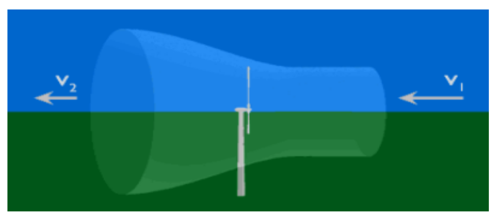

Polynômes#
Pourquoi les éoliennes ne tournent pas si vite ? – Version longue :#
Auteur : Etienne
Sujet : polynômes et dérivation
1e |
2e |
3e |
4e |
|---|---|---|---|
x |
x |
 Source image
Une éolienne utilise l’air pour fournir de l’électricité. L’air qui la traversse permet de faire tourner des pales qui alimentent un générateur. Pour étudier une éolienne, on considère un tube d’air autour d’elle qui commence quelques mètres avant et finit quelques mètres après (voir image). L’air arrive avec une vitesse \(v_1\) et ressort quelques mètres plus loin \(v_2\).
Considérant que l’air a fourni de l’énergie à l’éolienne, donner un encadrement de \(v_2\) en fonction de \(v_1\).
Réponse : Entre les deux, l’air a fourni de l’énergie à l’éolienne, on peut donc écrire que \({0\le v}_2\le\ v_1\). Note : il faut en réalité étudier les lignes de champs pour obtenir ce résultat, mais l’idée de la perte d’énergie reste valable.
A première vue, on peut penser qu’une éolienne qui tourne vite produit forcément plus d’énergie. C’est ce que nous allons vérifier. La relation de Bernoulli permet d’écrire la puissance de l’éolienne comme :
\(P=k.\left(v_1^2\ -\ v_2^2\right).\left(\frac{v_1+v_2}{2}\right)\)
Où \(k\) est une constante. Par la suite on supposera la vitesse d’entrée \(v_1\) connue et constante et on écrira x=v_2 la vitesse de sortie du vent. Pour étudier la puissance de l’éolienne, on étudiera donc la fonction f suivante :
\(f\left(x\right)=k.\left(v_1^2-x^2\right).\left(\frac{x+v_1}{2}\right)\)
Sur quel intervalle \(f\) est-elle définie ? Sur quel intervalle est-il judicieux de l’étudier ? On répondra en réfléchissant au sens de x.
Développer \(f\)
On cherche la vitesse \(x\) permettant à l’éolienne d’obtenir une puissance maximale. 4. Sur quel intervalle \(f\) est-elle dérivable ? Dériver \(f\).
Chercher \(x^\ast\in\mathbb{R}^+\) tel que \(f'(x^\ast)=0 \).
Que pensez-vous de cette valeur par rapport à \(v_1\) ?
Quelle est la valeur de la puissance électrique de l’éolienne pour cette valeur de \(x\) ? (Calculer f(x^\ast) )
En réalité, la vitesse des pales de l’éolienne est régulée pour que la vitesse de sortie soit toujours x^\ast. On suppose donc maintenant que l’éolienne fonctionne à cette vitesse. En réalité, \(k\) s’écrit \(k=\frac{\rho S}{2}\) où \(\rho\) est la masse volumique de l’air, qui est constante, et \(S\) la surface formée par les pales.
Si \(v_1\) est divisée par 2, par combien est divisé \(f\left(x^*\right)\) ?
Par combien faut-il augmenter S pour obtenir la même puissance malgré la baisse de \(v_1\) ?
Pourquoi les éoliennes ne tournent pas si vite ? – Version courte :#
Auteur : Etienne Sujet : polynômes et dérivation
1e |
2e |
3e |
4e |
|---|---|---|---|
x |
x |
Une éolienne utilise l’air pour fournir de l’électricité. L’air qui la traverse permet de faire tourner des pales qui alimentent un générateur. Sa puissance électrique s’écrit :
\(f\left(x\right)=k.\left(v_1^2-x^2\right).\left(\frac{x+v_1}{2}\right)\)
Où \( x\in\mathbb{R}^+ \) , \(k\) est une constante et v_1 est supposée connue et constante. On cherche la vitesse x permettant à l’éolienne d’obtenir une puissance maximale.
Développer \(f\).
Sur quel intervalle f est-elle dérivable ? Dériver \(f\).
Chercher \(x^\ast\in\mathbb{R}^+\) tel que \(f'(x^\ast)=0\).
Que pensez-vous de cette valeur par rapport à \(v_1\) ?
Quelle est la valeur de la puissance électrique de l’éolienne pour cette valeur de \(x^\ast\) ? (Calculer \(f(x^\ast)\) )